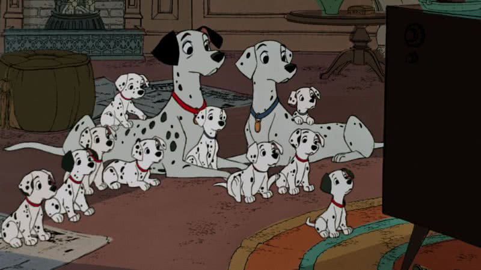
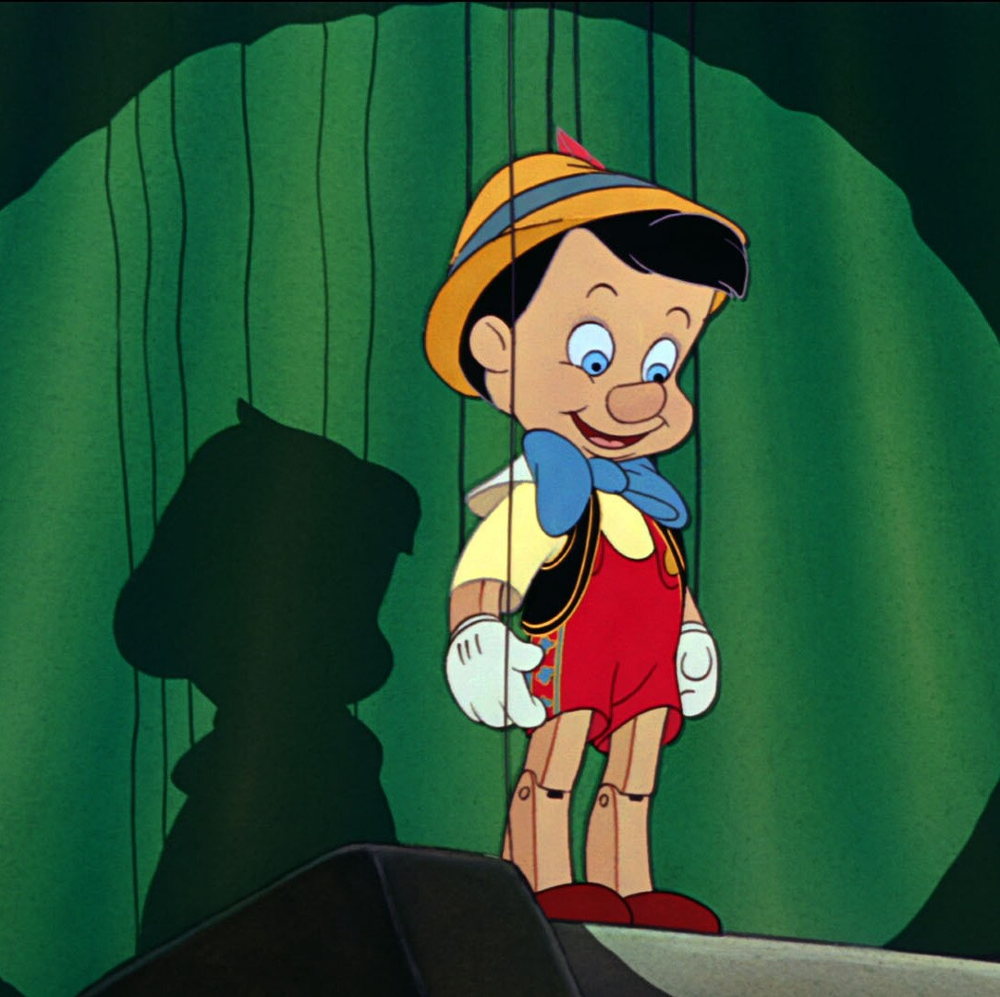
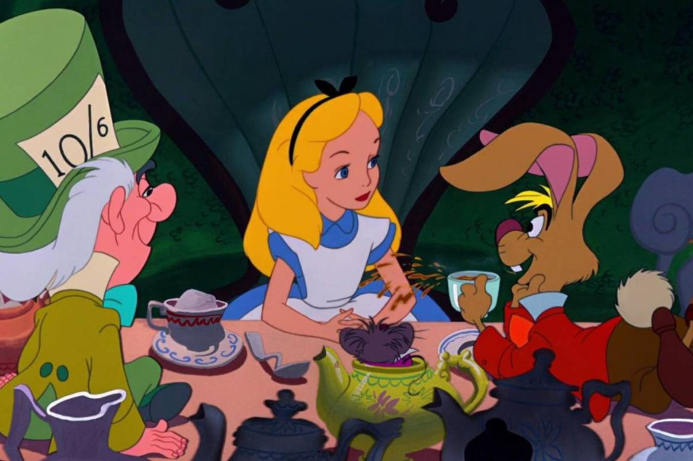
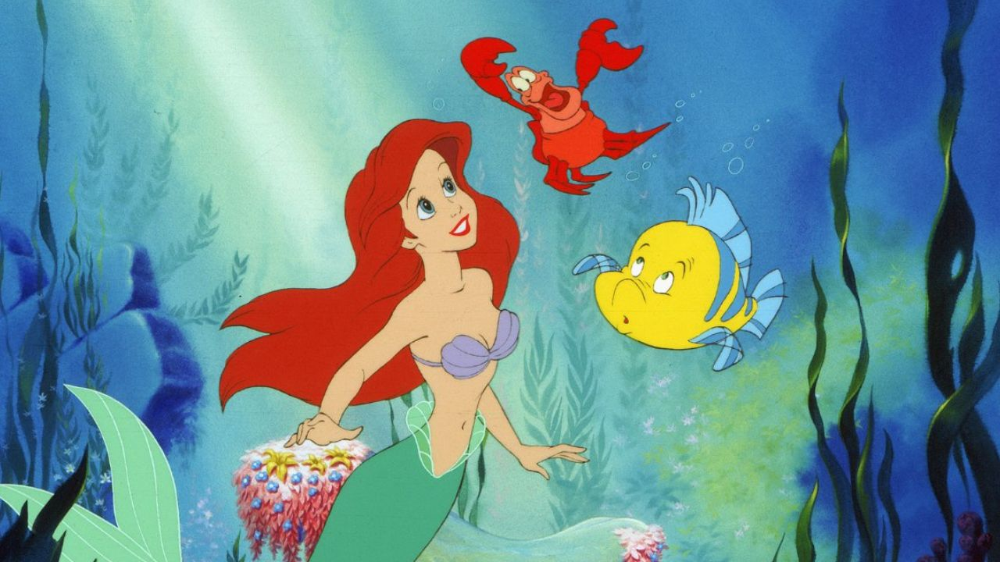
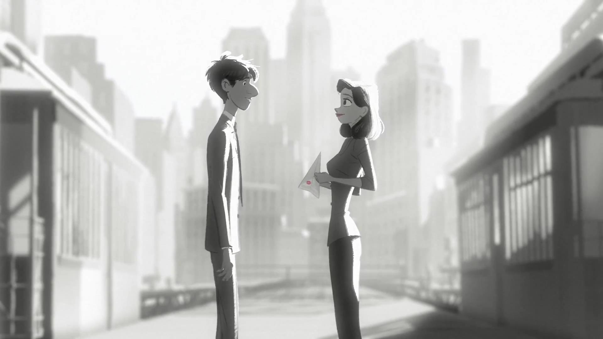

Primeiro longa-metragem animado da história do cinema e marco na trajetória da Walt Disney Animation Studios, obra que revolucionou a arte da animação com sua narrativa envolvente e personagens inesquecíveis. Inspirado no conto dos irmãos Grimm, o filme narra a jornada de Branca de Neve, sua fuga da maligna Rainha Má e a acolhida pelos 7 anões em sua cabana na floresta. Uma cena icônica que imortalizou esse clássico é a emocionante sequência em que Branca de Neve canta "Some Day My Prince Will Come" enquanto sonha com futuro de amor e esperança. A delicadeza da animação, suavidade da música e expressão dos personagens criaram atmosfera mágica que definiu o padrão para os filmes animados por gerações.
101 Dálmatas (1961)

Uma das mais queridas animações da Disney, trouxe abordagem inovadora com uso da tecnologia de xerografia para criar centenas de filhotes de dálmatas de forma eficiente, revolucionando o processo de animação. O filme segue a emocionante aventura de Pongo e Perdita, que enfrentam a vilã Cruella de Vil para salvar seus 15 filhotes, além de outros 84 cães capturados. Uma cena icônica que marcou o clássico é a frenética perseguição de Cruella em seu carro em meio a uma tempestade de neve. A intensidade de sua expressão descontrolada, combinada com a trilha sonora dramática, capturou perfeitamente a insanidade e obsessão da personagem, consolidando-a como uma das vilãs mais memoráveis do cinema.
Pinóquio (1940)

Uma das mais célebres animações da Disney, Pinóquio é uma história atemporal que explora temas de moralidade, coragem e desejo de pertencimento. Baseado no romance de Carlo Collodi, o filme acompanha a jornada do boneco de madeira, trazido à vida por uma fada azul, na busca para tornar-se menino de verdade, enquanto enfrenta tentações e perigos em um mundo vasto e imprevisível. Uma cena icônica que eternizou o clássico é quando Pinóquio canta "When You Wish Upon a Star" ao lado do Grilo Falante. Essa sequência não apenas encapsula a essência mágica e esperançosa do filme, como também transformou a música em hino da Disney, simbolizando os sonhos e aspirações de gerações ao redor do mundo.
Dumbo (1941)
Um dos filmes mais emocionantes da Disney, conta a comovente história do elefante nascido com orelhas enormes, que, apesar do escárnio e rejeição, encontra sua própria grandeza ao descobrir seu poder de voar. O filme, com animação simples e tocante, aborda temas de superação e aceitação. Uma cena icônica que marcou o coração de muitos é quando Dumbo, triste e isolado, é acalmado pela sua mãe, que canta a doce música "Baby Mine". Nessa sequência, a animada relação entre mãe e filho é representada com delicadeza rara para a época, tornando a cena profundamente emocional. A música, suave e melancólica, tornou-se uma das mais lembradas do filme, simbolizando amor incondicional e vínculo familiar.
Bambi (1942)
Obra-prima da Disney que retrata a vida de um cervo jovem em sua jornada de crescimento e aprendizado na floresta, abordando temas como perda, amizade e ciclo da vida. A animação destaca-se pela beleza de suas paisagens e profundidade emocional, especialmente pela forma delicada com que lida com questões de amadurecimento. Uma cena icônica que ficou eternizada é a trágica morte da mãe de Bambi, quando ela é baleada por caçadores, e a sequência de Bambi sozinho na floresta, chamando por ela. Este momento, acompanhado pela música suave e melancólica, não apenas marcou a infância de gerações de espectadores, como também estabeleceu padrão para tratamento de temas difíceis em filmes animados, criando uma das cenas mais emocionantes e impactantes da história do cinema de animação.
O Rei Leão (1994)
Um dos maiores clássicos da Disney, obra que combina história atemporal de amadurecimento e responsabilidade, com impressionante trilha sonora e animação. O filme segue a jornada de Simba, jovem leão que deve enfrentar o legado de seu pai, Mufasa, e a traição de seu tio Scar, antes de assumir seu lugar como rei da savana. Uma das cenas mais icônicas e emocionantes do filme é a morte de Mufasa, quando ele é tragicamente assassinado por Scar, enquanto Simba, impotente, observa. A sequência, marcada pela música dramática de Hans Zimmer, é profundamente impactante, pois simboliza a perda e a responsabilidade que Simba tem que aceitar para se tornar o líder que sua terra precisa. Esse momento se tornou um marco na história do cinema, sendo uma das cenas mais lembradas e discutidas da animação.
Cinderela (1950)
Um dos maiores clássicos da Disney, conta a história da jovem Cinderela, menina bondosa e sonhadora que, apesar da crueldade de sua madrasta e irmãs, encontra o amor e felicidade com ajuda de sua fada madrinha. A animação destaca-se por sua magia encantadora e lição de perseverança, mostrando que, apesar das dificuldades, os sonhos podem tornar-se realidade. Uma das cenas mais icônicas do filme é a transformação de Cinderela, quando sua fada madrinha usa a varinha mágica para transformar sua roupa esfarrapada em um deslumbrante vestido de baile, e transforma a abóbora em uma carruagem dourada. A música "Bibbidi-Bobbidi-Boo" toca durante essa sequência mágica, tornando-a inesquecível e simbolizando a transformação e esperança de um novo começo. Essa cena tornou-se um dos momentos mais emblemáticos da história da animação, evocando a ideia de que a magia pode surgir nos momentos mais inesperados.
Alice no País das Maravilhas (1951)

Uma das animações mais criativas e excêntricas da Disney, trazendo à vida o mundo ilógico e fantástico do clássico de Lewis Carroll. A história segue Alice, menina curiosa que, após cair em um buraco de coelho, se vê em um reino peculiar, onde encontra personagens bizarros e situações inesperadas. Uma cena icônica que ficou marcada é a famosa canção "A Very Merry Unbirthday", cantada pelo Chapeleiro Maluco e seus amigos, enquanto celebram um "aniversário" em meio à mesa de chá. A cena é um exemplo perfeito do humor irreverente e da magia que define o filme, com cores vibrantes, personagens excêntricos e melodia cativante que tornou essa sequência inesquecível. Essa cena simboliza o espírito de caos e diversão que permeia todo o filme, tornando-o obra única na história da animação.
Peter Pan (1953)
Clássico da Disney, apresenta história do menino que nunca cresce e suas aventuras na Terra do Nunca com Wendy, João e Miguel, enquanto enfrentam o vilão Capitão Gancho. A animação é marcada por temas de liberdade, imaginação e resistência ao crescimento, além de ser repleta de momentos mágicos. Uma cena icônica que ficou marcada é o voo de Peter Pan e os filhos Darling, quando eles, após ajuda de poeira de fada, voam sobre Londres em direção à Terra do Nunca. A sequência é memorável pela sua energia vibrante, a música "You Can Fly! You Can Fly! You Can Fly!" e a sensação de pura magia que ela transmite, simbolizando ideia de que qualquer um pode alcançar seus sonhos, desde que acredite. Esse momento capturou a essência do filme e tornou-se uma das imagens mais queridas da história da animação.
A Dama e o Vagabundo (1955)
Animação encantadora da Disney que narra história de Lady, cocker spaniel mimada e de boa família, que apaixona-se por Tramp, cão vira-lata travesso, mas de bom coração. O filme explora a diferença de classes sociais através dos olhos dos cães, ao mesmo tempo em que transmite mensagem sobre amor e superação de barreiras. Uma das cenas mais icônicas é o famoso jantar de espaguete, onde Lady e Tramp compartilham prato de macarrão sob as estrelas e acabam beijando-se acidentalmente. A cena, acompanhada da música romântica "Bella Notte", tornou-se símbolo do romance e magia do filme, imortalizando o momento como uma das mais queridas e lembradas sequências da história do cinema de animação. A imagem de ambos cães compartilhando o espaguete é símbolo atemporal de amor e ternura.
A Bela Adormecida (1959)
Uma das mais belas e grandiosas animações da Disney, baseada no conto clássico de Charles Perrault. O filme narra história de Aurora, princesa que, após ser amaldiçoada pela fada má Malévola, cai em sono profundo, podendo somente ser despertada por beijo de amor verdadeiro. A animação é famosa por sua estética deslumbrante, com cores vibrantes e sequências grandiosas, e pela magnífica trilha sonora de Tchaikovsky. Uma das cenas mais icônicas é o momento em que a fada madrinha, Flora, usa magia para transformar Aurora em bela princesa e prepara o castelo para o grande confronto com Malévola. A cena destaca-se não só pela beleza visual, como também pela dramática transformação de Malévola em dragão gigantesco, criando clímax tenso e inesquecível. A luta entre Malévola e os heróis tornou-se uma das sequências mais marcantes e emocionantes do filme, simbolizando eterna luta entre o bem e mal.
A Pequena Sereia (1989)

Marcando renascimento da Disney durante "Era de Ouro" da animação, obra fundamental que encantou gerações, o filme segue história de Ariel, jovem sereia que sonha em viver no mundo humano e apaixona-se pelo príncipe Eric, desafiando as ordens de seu pai, o Rei Tritão. A animação destaca-se por suas músicas memoráveis, como "Under the Sea" e "Part of Your World", além de sua impressionante animação subaquática. Uma cena icônica que ficou gravada na memória dos espectadores é quando Ariel, já humana, canta "Part of Your World" na beira da rocha, expressando seu desejo de pertencer ao mundo dos humanos. A cena é uma das mais emocionantes do filme, com animação exuberante e interpretação vocal poderosa que simboliza luta interna de Ariel entre seus sonhos e identidade. Este momento tornou-se emblemático, representando a busca por liberdade e identidade, um dos maiores marcos da Disney.
A Bela e a Fera (1991)
Um dos mais aclamados filmes da Disney, que destaca-se não apenas pela história encantadora, como também por suas músicas inesquecíveis e mensagem profunda sobre amor, aceitação e transformação. O filme conta a história de Belle, jovem inteligente e sonhadora que, ao ser aprisionada pelo príncipe amaldiçoado em castelo encantado, acaba descobrindo o verdadeiro significado do amor, que transcende aparências físicas. Uma das cenas mais icônicas do filme é o famoso baile entre Belle e a Fera, onde eles dançam sob uma imensa cúpula de vidro, enquanto a música "Beauty and the Beast" toca ao fundo. A cena é uma das mais memoráveis da animação, não apenas pela beleza visual e animação detalhada, mas pela profunda conexão emocional entre os personagens. O momento simboliza a transformação do relacionamento de ambos, de início tenso para profunda amizade e, eventualmente, amor verdadeiro. Esta cena tornou-se um dos marcos não só da Disney, mas do cinema de animação em geral.
O Corcunda de Notre Dame (1996)
Animação memorável da Disney, que aborda temas como aceitação, preconceito e poder da amizade, em história inspirada no romance de Victor Hugo. O filme segue Quasimodo, corcunda que vive isolado na catedral de Notre-Dame, e sua luta para conectar-se com o mundo exterior, enquanto defende a cigana Esmeralda e enfrenta o vilão Frollo. Uma cena icônica que ficou marcada é quando Quasimodo, após ser corajosamente defendido por Esmeralda, canta canção "Out There", expressando seu desejo de liberdade e aceitação. A cena é poderosa tanto pela emoção da performance quanto pela animação deslumbrante que retrata Quasimodo sonhando com um mundo além das paredes da catedral. Essa sequência, além de refletir o anseio de Quasimodo por um lugar no mundo, tornou-se um dos momentos mais emblemáticos do filme, simbolizando temas universais de pertencimento e identidade.
Aladdin (1992)
Um dos filmes mais encantadores da Disney, com sua mistura de aventura, romance e humor, além de trilha sonora memorável composta por Alan Menken. O filme segue a jornada de Aladdin, jovem que encontra lâmpada mágica e liberta um gênio que realiza 3 desejos, enquanto tenta conquistar a princesa Jasmine e salvar o reino de um vilão traiçoeiro, Jafar. Uma das cenas mais icônicas é quando Aladdin e Jasmine voam em um tapete mágico durante a canção "A Whole New World". A sequência, com sua animação deslumbrante e música romântica, representa o momento de libertação de Jasmine, que finalmente vê o mundo além dos muros do palácio, ao lado de Aladdin. Esse voo mágico tornou-se uma das cenas mais emblemáticas do filme, simbolizando ideia de aventura e possibilidades infinitas, tornando-se marco na história do cinema de animação.
Elo passado futuro

Paperman (2012) é aclamado curta-metragem da Disney, vencedor do Oscar de Melhor Curta de Animação. Dirigido por John Kahrs, o curta combina animação tradicional com tecnologia de animação por computador, criando estética única que captura magia e simplicidade da vida urbana. "Paperman" conta a história de um jovem executivo que, após um encontro casual com uma mulher, tenta reconectar-se com ela usando aviões de papel, em uma tentativa romântica e cativante. O curta é notável não apenas por seu estilo visual, como também pela forma de transmitir emoção e narrativa sem palavras, utilizando apenas a música e ação visual para contar sua história, relembrando os clássicos do mundo Disney. A cena icônica de "Paperman" envolve aviões de papel que o protagonista lança, com um toque de magia, levando a história a um clímax romântico e surpreendente. A animação foi elogiada pela sua capacidade de capturar sentimentos profundos de uma maneira simples, mas eficaz, e permanece uma das mais amadas produções da Disney, sendo um elo entre passado e futuro na produção audiovisual das animações.